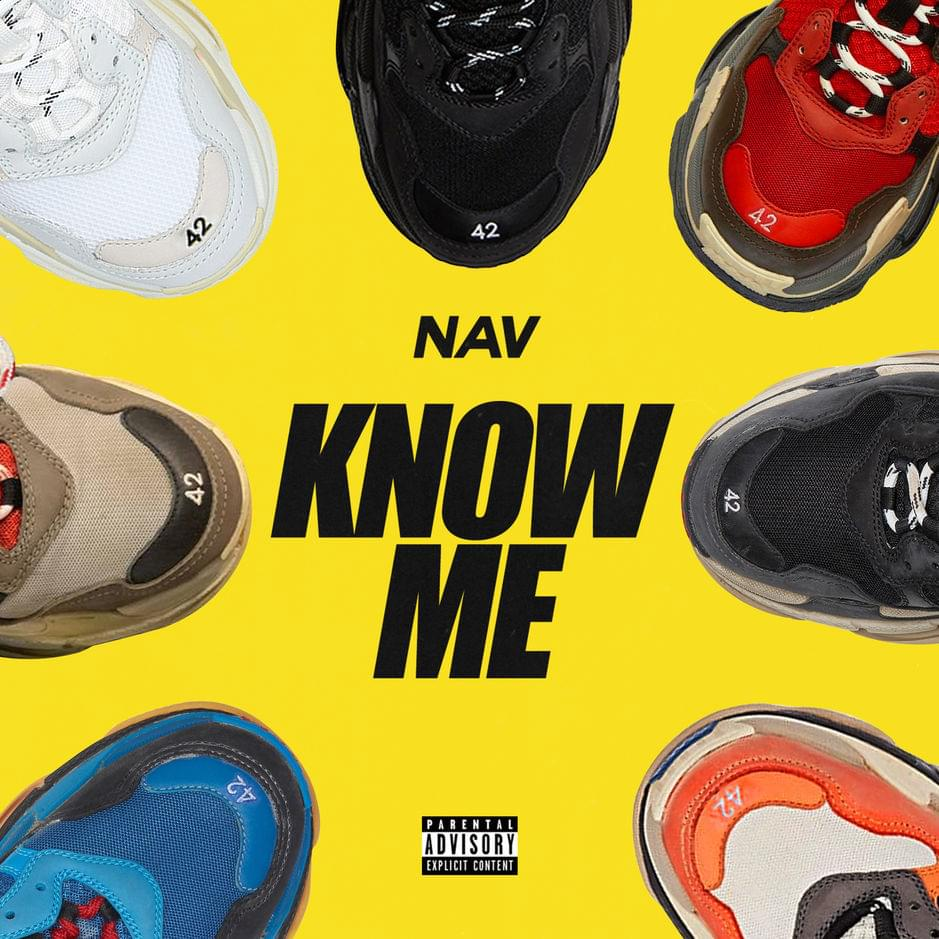
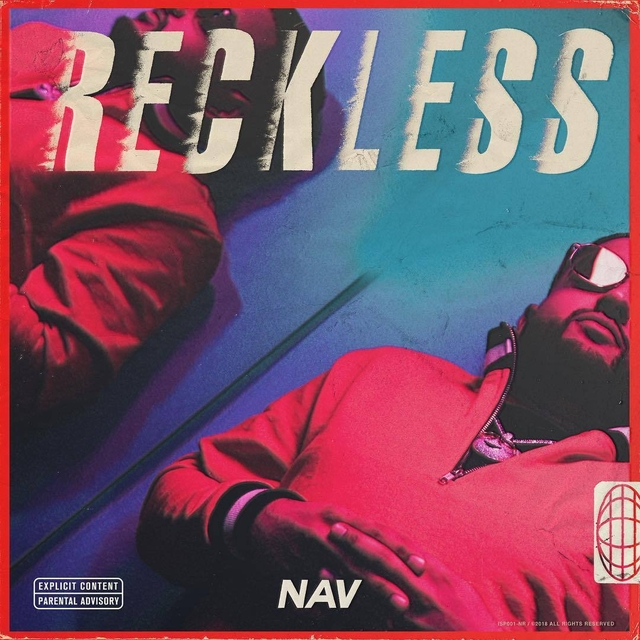
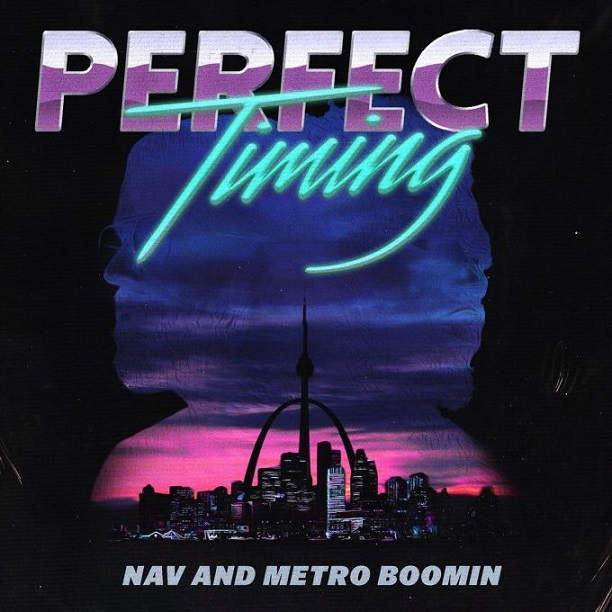

NAV

Biography
Navraj Singh Goraya, better known by his stage name Nav, is a Canadian rapper, singer, songwriter and record producer from Toronto, Ontario, of Punjabi descent. He is signed to XO and Republic Records.
Nav had his first taste of fame when reality TV star Kylie Jenner posted a Snapchat video of herself singing along to his song "Myself." The mysterious star had been steadily building a large following through a string of releases via his SoundCloud account, beginning in 2015 with "Take Me Simple."
Releases


